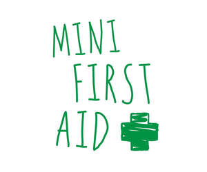

Trade Mark Journal No.2025/026 27 June 2025
UK00004156809 6 February 2025 (5,10,35,41)
Mark 1

Mark 2
- Class 5
- First aid kits; portable first aid kits; first aid boxes sold filled; first aid kits for domestic use; workplace first aid kits; plasters [dressings]; adhesive plasters for medical use; materials for dressings; compression bandages [dressings]; medical adhesive tapes; wound dressings; topical first aid gels; skin sanitising wipes for medical use; impregnated dressings for the treatment of burns; eye pads and bandages for medical use; eye lotions for medical use; washes (sterilising); cardiopulmonary resuscitation (CPR) face shields for medical use.
- Class 10
- Thermal packs for first aid purposes; cooling packs for first aid purposes; medical shears; tweezers for medical use; triangular bandages; compression bandages; protective face masks for medical use; protective gloves for medical use; defibrillators.
- Class 35
- Retail services and mail order retail services connected with the sale of first aid kits, portable first aid kits, first aid boxes sold filled, first aid kits for domestic use, workplace first aid kits, plasters [dressings], adhesive plasters for medical use, materials for dressings, compression bandages [dressings], medical adhesive tapes, wound dressings, medical products for use in the treatment of injuries, topical first aid gels, skin sanitising wipes for medical use, impregnated dressings for the treatment of burns, eye pads and bandages for medical use, eye lotions for medical use, washes (sterilising), protective gloves for medical use, cardiopulmonary resuscitation (CPR) face shields for medical use, thermal packs for first aid purposes, cooling packs for first aid purposes, medical shears, tweezers for medical use, triangular bandages, compression bandages, protective face masks for medical use, first aid instructional manuals and leaflets, and defibrillators.
- Class 41
- Training courses, classes and seminars; education and training courses relating to first aid; arranging and conducting training workshops in the field of first aid and cardiopulmonary resuscitation (CPR); advice relating to medical training; provision of skill assessment courses; certification, accreditation and validation of training awards; teaching of life-saving techniques; certification, accreditation and validation of education and training courses and programmes particularly in relation to first aid; provision of training, teaching, academic, education, instruction, examination, testing and assessment services; publication of printed matter; publishing services; information, advisory and consultancy services in relation to all the aforesaid services.
The mark is proceeding because of distinctiveness acquired through use.
Mini First Aid Limited
Representative: Lincoln IP